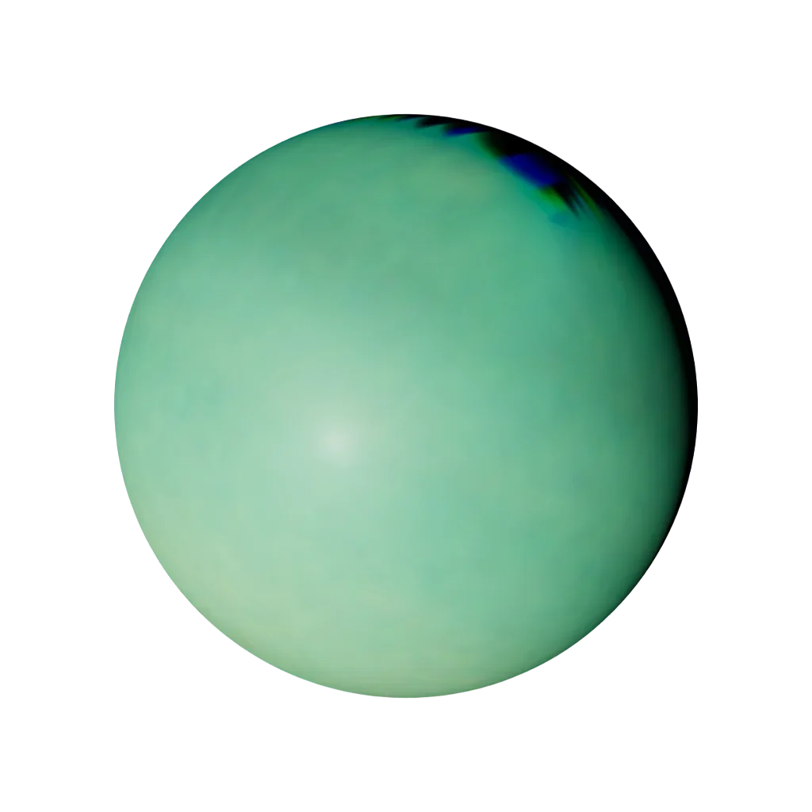

Sign guide · Water · Mutable
Pisces
February 19 – March 20
“I believe”
- Element
- Water
- Modality
- Mutable
- Ruler
- Neptune & Jupiter
- Symbol
- The Fishes
Pisces in today’s sky
Computed from today’s sky with the same VSOP87 engine as the orrery. Not a live feed.
Today’s Pisces reading is calculated in your browser from real planetary positions. If this text remains, turn on JavaScript to see it, or read the full Pisces guide below.
About Pisces
Pisces is the zodiac's last sign — and carries something of all eleven before it. Ruled by Neptune, planet of dreams and dissolution, Pisces lives with thin boundaries between self and world, real and imagined, this life and something larger. This is the sign of the mystic and the artist: the most compassionate of the twelve, and the most easily lost.
The astronomy of Pisces
The factual layer: where Pisces sits on the ecliptic.
Element, ruler, ecliptic band
the element of feeling — water signs move through emotion, intuition and depth.
the adapting mode — mutable signs flex, blend and prepare the way for change.

Neptune, planet of dreams and dissolution, with classical Jupiter for its faith.
Neptune · our engine render
Pisces is the 330°–360° band of the zodiac circle. The Sun crosses it around 19 Feb – 20 Mar each year. The exact day shifts by about a day from year to year, which is why the dates are approximate.
Pisces in your chart
Most people meet Pisces as a “star sign”. In a real birth chart it can appear in three very different places, and each one means something distinct.
Sun in Pisces
Your core self: the “Pisces side” people mean when they ask your sign. It shapes your basic character and what makes you feel most yourself.
Moon in Pisces
Your inner, emotional world: how you feel, comfort yourself and respond in private. Two people with a Pisces Moon share an emotional language, whatever their Sun sign.
Rising (Ascendant) in Pisces
How you meet the world: your outward style and first impression. Your Rising is set by the exact time and place you were born, so it needs your birth time to know.
Pisces strengths & challenges
Strengths
- Compassion without conditions
- Imagination as a natural element
- Intuition bordering on telepathy
- Adaptability to any current
Challenges
- Escapism when reality presses
- Boundaries — locating, then defending them
- Absorbing every mood in the room
- Martyrdom mistaken for love
In life
Love
Pisces loves the way the sea loves the shore — totally, surrounding, without conditions. This sign offers a kind of acceptance most people have never experienced, and asks for tenderness in return. The danger is dissolution: a Pisces in love can forget where they end and the beloved begins. The right partner holds the boundary kindly.
Traditionally a good match with Cancer, Scorpio and Taurus. See two-chart compatibility: Sun signs alone are not the whole story.
Career, friendship, shadow, growth
Career
Pisces flourishes where imagination and empathy are the actual job: arts, music, film, healing professions, spiritual care, marine work. Rigid structures drain this sign; flow states sustain it. The ideal Piscean role serves something larger than profit and leaves room to dream.
Friendship
A Pisces friend is the one who truly understands — who feels what you feel before you have explained it, and holds your secrets with infinite gentleness. This sign offers a soft place to land and a sympathy so complete it can feel like being healed. The care for a Pisces friendship runs both ways: this sign gives until it is empty, so the kindest thing you can do is notice when it needs holding too, and remind it where it ends and you begin.
Shadow
The Pisces shadow is the tide that pulls under — escapism when reality presses, martyrdom mistaken for love, and boundaries so thin the self dissolves into everyone else's needs. The dreaming becomes avoidance; the compassion becomes self-erasure; the longing for something larger becomes a flight from the life actually here. The growth edge is incarnation: staying present in the body and the day, and learning that one cannot pour from an empty vessel.
Growth
The inner path for Pisces is from dissolution to devotion — learning to channel its oceanic sensitivity into creation and service rather than escape. This sign grows by building gentle boundaries, by grounding its dreams in daily practice, and by tending its own spirit as faithfully as it tends others'. When Pisces stops fleeing the world and brings its compassion fully into it, the dreamer becomes the artist and the mystic the world needs.
Pisces reference
Dates, ruler, FAQ
Pisces at a glance
- Symbol
- The Fishes
- Dates
- February 19 – March 20
- Element
- Water
- Modality
- Mutable
- Ruling planet
- Neptune & Jupiter
- Polarity
- Feminine / Yin
- Body part
- The feet and lymphatic system
- Tarot
- The Moon
- Keyword
- “I believe”
Frequently asked
What are the Pisces zodiac dates?
Pisces season runs February 19 – March 20. People born in this window have their Sun in Pisces.
What element and ruling planet is Pisces?
Pisces is a Water sign of the Mutable modality, ruled by Neptune & Jupiter. Its symbol is The Fishes.
Which signs are most compatible with Pisces?
Pisces is traditionally most compatible with Cancer, Scorpio, Taurus. Full synastry depends on the complete birth charts of both people, not Sun signs alone.
What are the main Pisces personality traits?
Pisces is known for being compassion without conditions, imagination as a natural element, intuition bordering on telepathy. Its growth edges include escapism when reality presses and boundaries — locating, then defending them. As a Mutable Water sign ruled by Neptune & Jupiter, Pisces carries the keyword “I believe”.
Is Pisces rare?
No zodiac sign is truly rare: every sign covers about a month, so each accounts for roughly one twelfth of birthdays. Small global birth-rate variations by season make some signs marginally more common than others, but Pisces is no rarer than any other Sun sign. Your full birth chart, however, is genuinely one of a kind.
What is the Pisces symbol and ruling body?
The symbol of Pisces is The Fishes, and it is ruled by Neptune & Jupiter. Its polarity is feminine / yin, it is traditionally associated with the feet and lymphatic system, and its corresponding tarot card is The Moon.
Every sign
Tap a tile to open that sign’s guide and today’s sky.